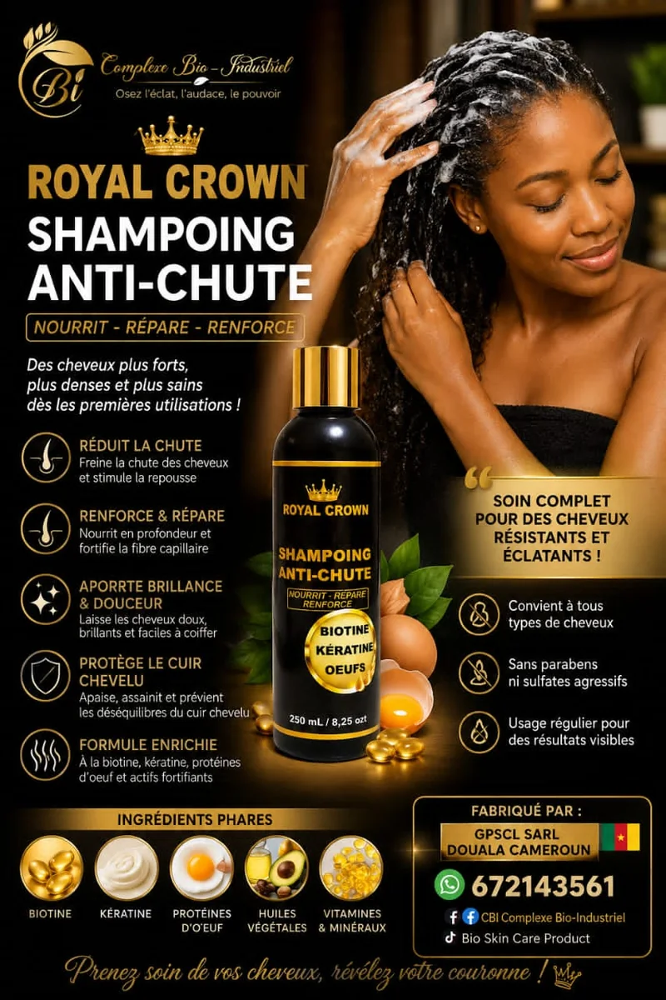
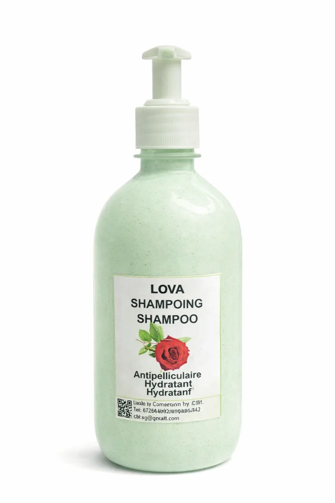
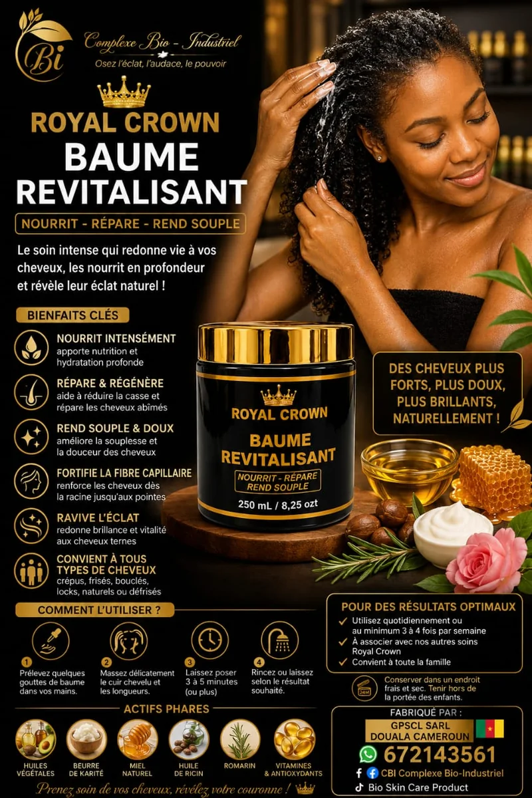
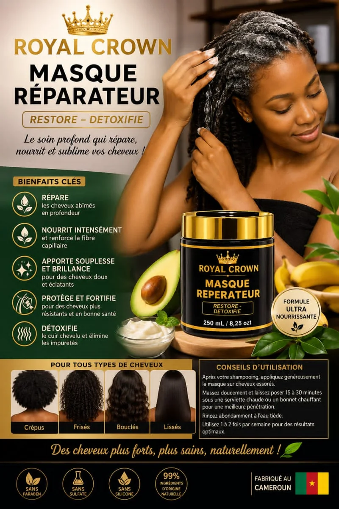

Bienvenue dans notre espace Soins capillaires
BOUTIQUE CBI vous propose une sélection de produits destinés à l'entretien et au soin des cheveux. Découvrez nos solutions capillaires pour accompagner votre routine beauté au quotidien.
Retrouvez des shampoings, huiles, masques, baumes, sérums et soins formulés pour répondre à différents besoins capillaires.
Découvrir tous nos produitsNos shampoings

Shampoing Réparateur Royal Crown
Un soin lavant pour nettoyer les cheveux et accompagner l'entretien de la fibre capillaire.
Prix : 5 000 FCFA
Découvrez nos shampoings destinés au nettoyage et à l'entretien des cheveux : shampoings antipelliculaires, nourrissants et réparateurs.

Shampoing Antipelliculaire
Un soin lavant conçu pour accompagner l'entretien du cuir chevelu et aider à lutter contre les pellicules.
Prix : selon le format
Nos huiles et soins capillaires

Baume Capillaire Royal Crown
Un soin capillaire pour accompagner l'entretien, la souplesse et le soin des cheveux.
Prix : 5 000 FCFA

Masque Capillaire Royal Crown
Un soin destiné à nourrir les cheveux et à accompagner leur entretien.
Prix : 5 000 FCFA
Explorez notre sélection d'huiles capillaires, de masques, de baumes, de beurres et de sérums pour compléter votre routine de soin des cheveux.
Voir les soins capillairesDes produits pour votre routine capillaire
Que vous recherchiez un soin nettoyant, nourrissant ou réparateur, découvrez les produits disponibles dans notre catalogue BOUTIQUE CBI.
Consultez les descriptions et les disponibilités directement dans notre boutique en ligne.
Commandes et renseignements
Pour obtenir des informations sur nos produits capillaires et passer une commande, contactez-nous.
Commander sur WhatsApp